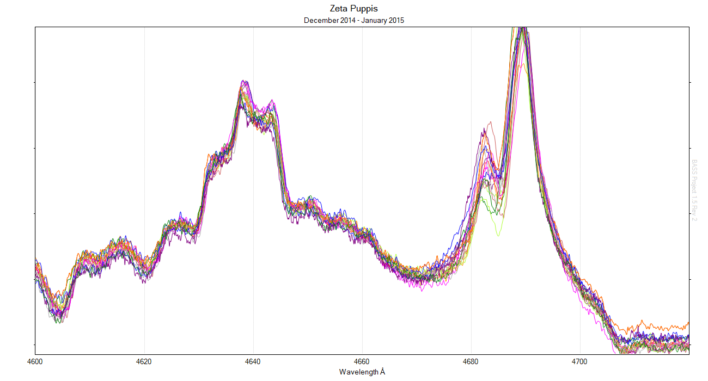
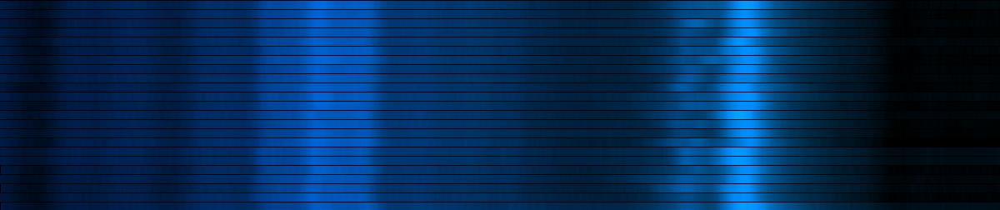
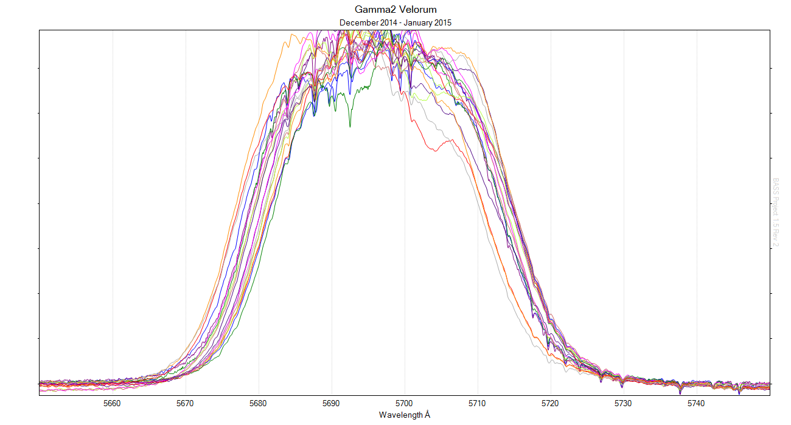
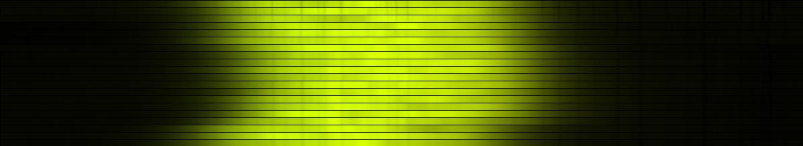

A quick representation showing 1.5 month's worth of data collected so far for the 2015 zet Pup and gam² Vel spectroscopic monitoring campaigns. Zet Pup spectra target the 4686Å HeII emission feature, while the CIII feature at 5696Å is the target for gam² Vel.
Using a Lhires III spectroscope with 2400 l/mm grating and a 35µm slit yields R~ 9000 and S/N > 500 with 12.9µm pixels of the Atik 314L+ CCD camera on a typical 10 - 15 minute integration.



